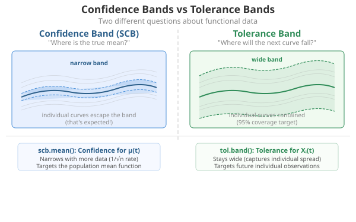
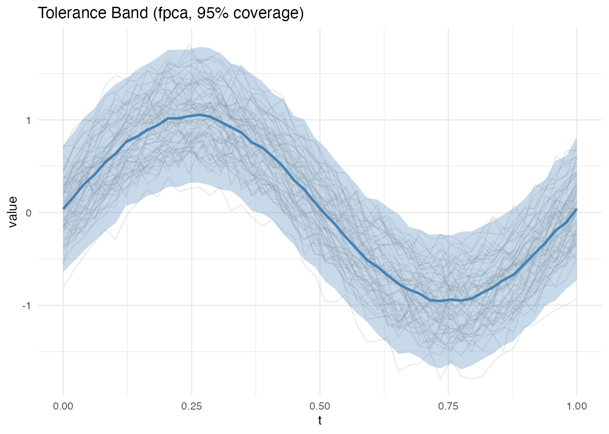
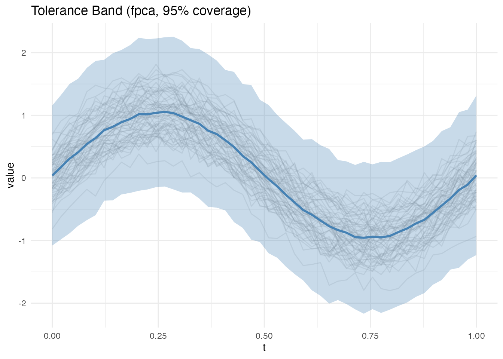
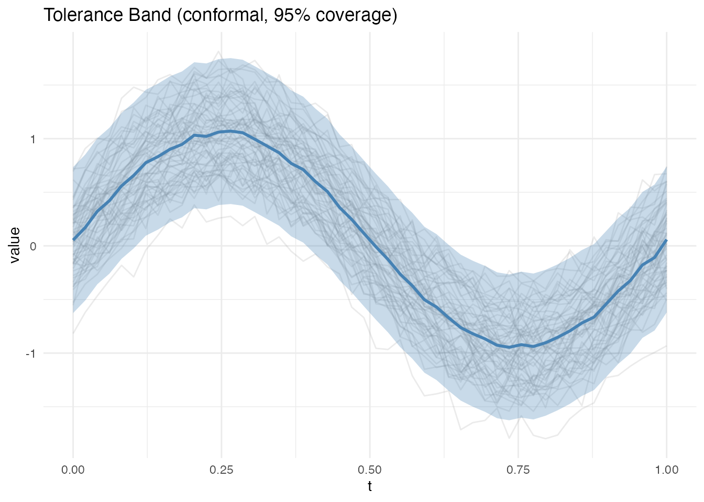
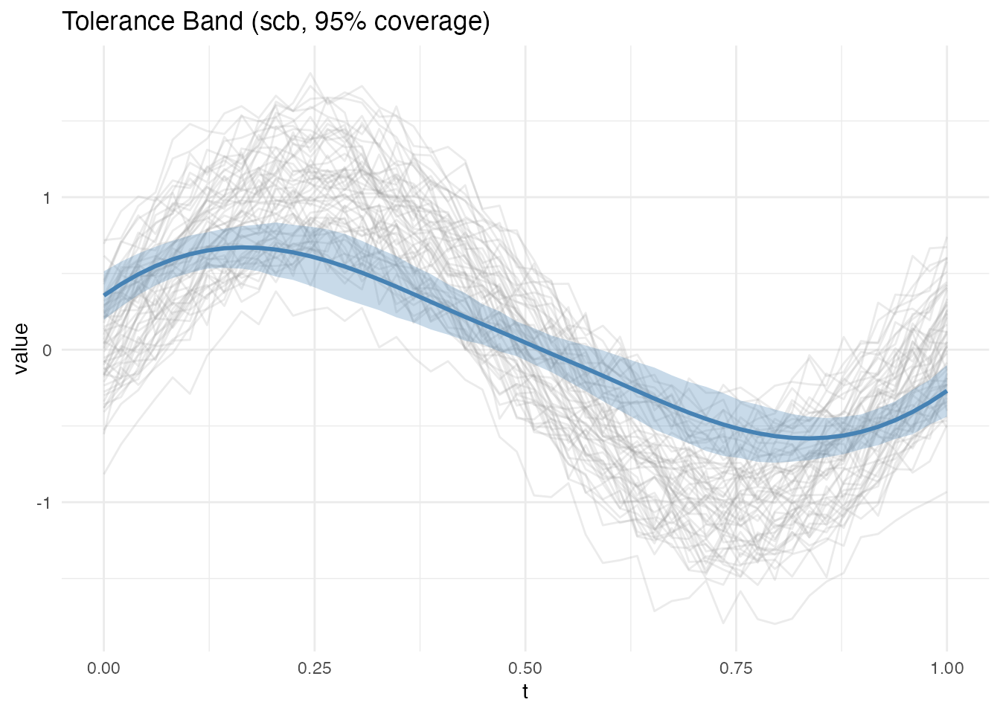
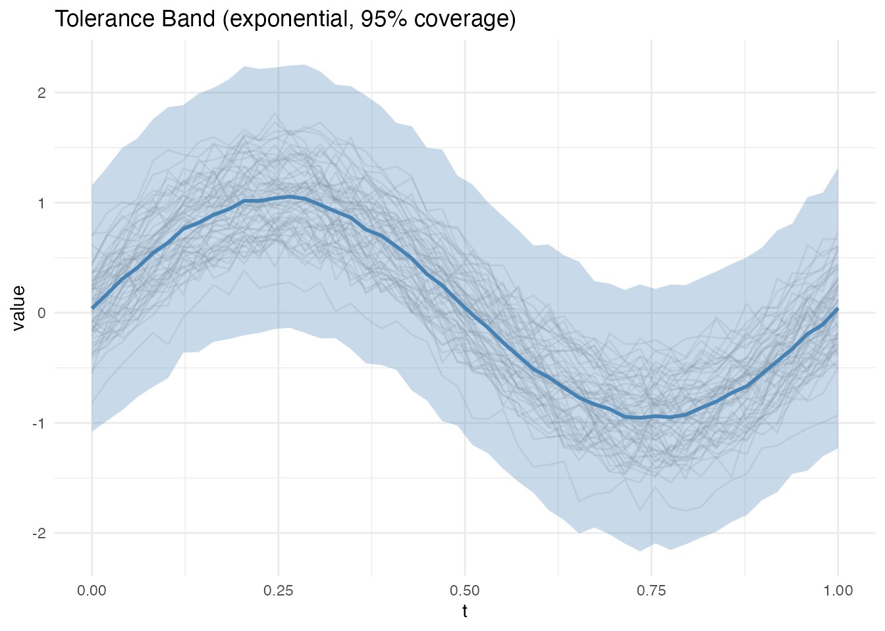
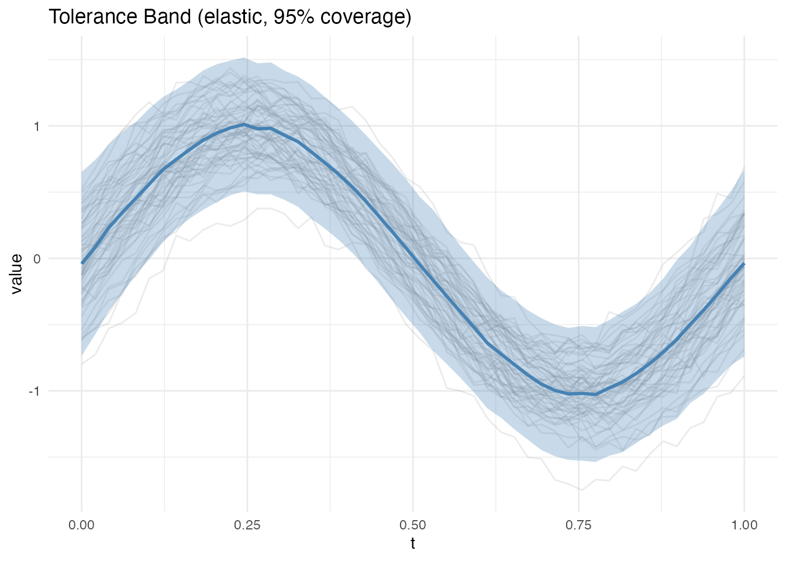

Introduction
A tolerance band for functional data is a region expected to contain a given fraction of individual curves in the population – the functional analogue of classical tolerance intervals. Unlike confidence bands (which target the mean), tolerance bands characterize the spread of individual curves.
fdars provides four tolerance band methods, plus a confidence band for the mean:
Tolerance bands (for individual curves):
| Method | Key Properties |
|---|---|
| FPCA | Bootstrap on PC scores; pointwise or simultaneous |
| Conformal | Distribution-free; uses calibration/training split |
| Exponential family | For non-Gaussian data (Binomial, Poisson) |
| Elastic | Alignment-based; removes phase variability first |
Confidence band (for the mean function):
| Method | Key Properties |
|---|---|
| SCB (Degras) | Simultaneous confidence band for the mean via multiplier bootstrap |
The distinction matters: a tolerance band captures the spread of individual curves in the population, while a confidence band quantifies the uncertainty in the estimated mean function. Tolerance bands are always wider than confidence bands because individual curve variability exceeds mean estimation uncertainty.

How It Works (Intuition)
Imagine you have a collection of temperature curves measured over a year. A tolerance band answers: “If I measure one more year, where will the new curve likely fall?” The band should be wide enough to contain, say, 95% of future curves.
The FPCA method breaks each curve into a mean shape plus a few dominant modes of variation (principal components). It resamples the scores on these modes to estimate where new curves might land.
The conformal method takes a simpler, assumption-free approach: it holds out some curves, measures how far they deviate from the rest, and uses those deviations directly to set band width. No distributional assumptions needed.
The elastic method first aligns curves to remove timing differences (phase variability), then builds a tolerance band on the aligned data. This is useful when curves have the same shape but differ in timing – the band is tighter because alignment concentrates the variability.
The exponential family method handles non-Gaussian data (e.g., count data) by transforming to a natural parameter scale, computing bands there, and transforming back.
Finally, the SCB Degras method is different in kind: it builds a confidence band for the mean function rather than individual curves. It answers “where does the true population mean lie?” rather than “where will the next curve fall?”
Mathematical Framework
Setup
Let be i.i.d. random functions observed on a grid with mean function and covariance function .
A -tolerance band is a region such that
for a new independent draw from the same process.
FPCA Method (Rathnayake and Cuevas, 2016)
By the Karhunen-Loève expansion, each curve can be represented as
where are the eigenfunctions of and are uncorrelated PC scores with . The method proceeds:
- Estimate , , and scores from data
- Bootstrap: resample from the empirical score distribution and reconstruct
- Pointwise band: At each , set and to the and quantiles of the bootstrap distribution
- Simultaneous band: Find the smallest such that a fraction of bootstrap curves lie entirely within , where is the pointwise bootstrap standard deviation
The simultaneous band is wider (controls family-wise coverage) while the pointwise band is narrower (controls marginal coverage at each ).
Conformal Method (Lei and Wasserman, 2014)
The conformal approach is distribution-free. Split the data into a training set of size and a calibration set of size :
- Compute from the training set
- For each calibration curve
,
compute a non-conformity score:
- Sup-norm:
- :
- Set to the quantile of
- The band is (sup-norm) or (, with local weights)
The key guarantee is finite-sample validity: , with no distributional assumptions.
SCB Degras Method (Degras, 2011)
This constructs a simultaneous confidence band for the mean rather than a tolerance band for individual curves. Let
be the standardized process. Under regularity conditions, converges to a Gaussian process with known covariance structure. The critical value is obtained via a multiplier bootstrap:
- Generate
- Compute
- Set $c_= $ the -quantile of across bootstrap replicates
The SCB is then .
Exponential Family Method
For functional data from an exponential family with density
the method applies the canonical link to transform data to the natural parameter scale, computes FPCA tolerance bands on the transformed data, and maps back through :
- Transform:
- Compute FPCA band on
- Back-transform: ,
For Gaussian data (), this reduces to the standard FPCA band. For Poisson data (), the band respects the non-negativity constraint.
Elastic Method
When curves exhibit phase variability (horizontal shifts), standard tolerance bands are inflated because they treat timing differences as amplitude variation. The elastic method removes this:
- Compute the Karcher mean and warping functions using the elastic (Fisher-Rao) framework
- Align:
- Compute an FPCA tolerance band on the aligned data
The resulting band is tighter because alignment concentrates variability into the amplitude component, reducing the effective variance at each grid point.
FPCA Bootstrap Band
The FPCA method reconstructs curves from their principal component scores and uses bootstrap resampling to estimate quantiles. Two types are available:
- Pointwise: Independent interval at each evaluation point (narrower)
- Simultaneous: Single scaling factor across all points (wider, controls family-wise error)
band_pw <- tolerance.band(fd, method = "fpca", coverage = 0.95,
band.type = "pointwise", nb = 200, seed = 42)
print(band_pw)
#> Functional Tolerance Band
#> Method: fpca
#> Coverage: 0.95
#> Grid points: 50
#> Mean half-width: 0.7163
plot(band_pw)
band_sim <- tolerance.band(fd, method = "fpca", coverage = 0.95,
band.type = "simultaneous", nb = 200, seed = 42)
plot(band_sim)
Conformal Prediction Band
The conformal method is distribution-free: it makes no parametric assumptions about the data-generating process. It splits data into a training set and calibration set, computing non-conformity scores on the calibration set to determine band width.
Two score types are available: - supnorm: Maximum deviation (constant band width) - l2: Integrated squared deviation (variable band width)
band_conf <- tolerance.band(fd, method = "conformal", coverage = 0.95,
score.type = "supnorm", seed = 42)
plot(band_conf)
Mean Confidence Band (SCB Degras)
The Degras (2011) method is fundamentally different from the tolerance band methods above. It constructs a simultaneous confidence band for the mean function , not a tolerance band for individual curves.
What it tells you: “The true population mean lies within this band with 95% confidence.” The band shrinks as because we estimate the mean more precisely. In contrast, tolerance bands do not shrink with – they target the spread of individual curves, which is a fixed population property.
How it works: The method standardizes the empirical process and uses a multiplier bootstrap to estimate the distribution of its supremum. The critical value controls the family-wise coverage across all simultaneously – the band is valid uniformly over the entire domain, not just pointwise.
When to use it:
- Testing whether a hypothesized mean function falls within the band
- Comparing mean functions across groups (non-overlapping SCBs indicate significant differences)
- Assessing sample size adequacy (very wide SCBs suggest more data is needed)
band_scb <- tolerance.band(fd, method = "scb", coverage = 0.95,
nb = 200, seed = 42)
plot(band_scb)
Note how much narrower the SCB is compared to the tolerance bands above – it targets the mean, not individual curves. The width scales as .
Exponential Family Band
For data from exponential family distributions (e.g., count data), the exponential family method applies the appropriate link function transformation before computing FPCA bands:
# Gaussian data (identity link)
band_exp <- tolerance.band(fd, method = "exponential", family = "gaussian",
nb = 200, seed = 42)
plot(band_exp)
Elastic (Alignment-Based) Band
The elastic method first aligns curves using the Karcher mean in the elastic metric, removing phase variability. It then computes an FPCA tolerance band on the aligned data. This produces tighter bands when curves exhibit timing differences:
# Generate data with phase variability
set.seed(42)
data_phase <- matrix(0, n, 50)
for (i in 1:n) {
shift <- runif(1, -0.05, 0.05)
data_phase[i, ] <- sin(2 * pi * (argvals - shift)) + rnorm(1, 0, 0.2) +
rnorm(50, 0, 0.05)
}
fd_phase <- fdata(data_phase, argvals = argvals)
band_elastic <- tolerance.band(fd_phase, method = "elastic", coverage = 0.95,
nb = 200, max.iter = 10, seed = 42)
print(band_elastic)
#> Functional Tolerance Band
#> Method: elastic
#> Coverage: 0.95
#> Grid points: 50
#> Mean half-width: 0.5379
plot(band_elastic)
Compare the elastic band to FPCA on the same phase-shifted data:
band_fpca_phase <- tolerance.band(fd_phase, method = "fpca", coverage = 0.95,
nb = 200, seed = 42)
cat("FPCA mean half-width: ", round(mean(band_fpca_phase$half_width), 4), "\n")
#> FPCA mean half-width: 0.5559
cat("Elastic mean half-width:", round(mean(band_elastic$half_width), 4), "\n")
#> Elastic mean half-width: 0.5379The elastic band is narrower because alignment concentrates variance into amplitude rather than spreading it across both amplitude and phase.
Phase Tolerance Bands
When curves differ primarily in timing (phase variation), a phase tolerance band captures the expected range of warping functions. This tells you “how much timing variation is normal”:
band_phase <- tolerance.band(fd_phase, method = "phase",
ncomp = 3, coverage = 0.95, nb = 200, seed = 42)
plot(band_phase)The result includes $phase.lower and
$phase.upper (warping function bounds) in addition to the
standard amplitude band.
Joint Elastic Tolerance Bands with Config
The "elastic.config" method provides fine-grained
control over elastic tolerance bands by separately configuring amplitude
and phase components:
band_joint <- tolerance.band(fd_phase, method = "elastic.config",
ncomp = 3, coverage = 0.95, nb = 200,
lambda = 0.0, max_iter = 20, seed = 42)
plot(band_joint)This returns both amplitude bounds ($lower,
$upper) and phase bounds ($phase.lower,
$phase.upper), allowing you to understand whether new
curves deviate in shape, timing, or both.
Choosing a Method
| Your goal | Recommended method |
|---|---|
| General-purpose tolerance band | FPCA (method = "fpca") |
| No distributional assumptions | Conformal (method = "conformal") |
| Data with timing differences | Elastic (method = "elastic") |
| Phase variation bounds only | Phase (method = "phase") |
| Separate amplitude + phase bounds | Elastic config (method = "elastic.config") |
| Count or binary functional data | Exponential (method = "exponential") |
| Confidence band for the mean | SCB Degras (method = "scb") |
See Also
-
vignette("equivalence-testing", package = "fdars")— equivalence testing for functional data -
vignette("fpca", package = "fdars")— functional principal component analysis
References
- Rathnayake, L.N. and Cuevas, A. (2016). Tolerance bands for functional data. Technometrics, 58(3):326–334.
- Lei, J. and Wasserman, L. (2014). Distribution-free prediction bands for non-parametric regression. Journal of the Royal Statistical Society: Series B, 76(1):71–96.
- Degras, D. (2011). Simultaneous confidence bands for nonparametric regression with functional data. Statistica Sinica, 21(4):1735–1765.